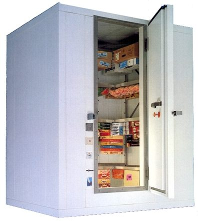
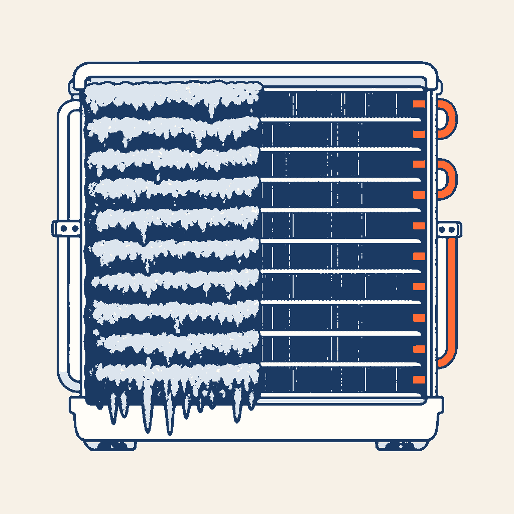

0,95×
FLUIDES · LE FROID ET LE PRODUIT
Positif, négatif,
congélation, surgélation
Vous apprenez ce que le froid fait au produit : le froid positif qui garde frais, le froid négatif qui gèle, les trois temps de la congélation, ce qui change quand on surgèle, et la règle pour décongeler sans danger.
Statut : en cours de relecture. Ce cours n’est pas encore validé par F. Henninot.


Point réglementaire. La règle de décongélation (enceinte réfrigérée entre 0 °C et +4 °C, pas de recongélation) vient de l’arrêté du 21 décembre 2009, annexe VI. Les définitions de la congélation et de la surgélation viennent du corrigé d’un sujet d’examen : ce ne sont pas des textes réglementaires.
Sert notamment pour
- CAP IFCA — savoir associé S4.2
- « Action du froid sur la conservation des denrées » (domaine D2 : Confort d’ambiance / Sécurité alimentaire, savoir S4).
- Bac Pro MFER (référentiel 2028) — savoir S4.1.1
- « L’action du froid au service de la conservation des produits » (S4.1 : les circuits frigorifiques ; S4 : principes scientifiques et techniques).